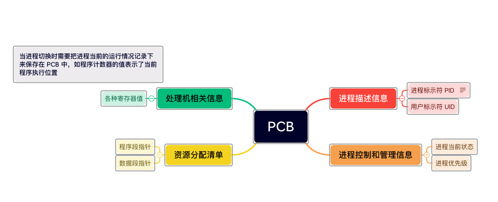
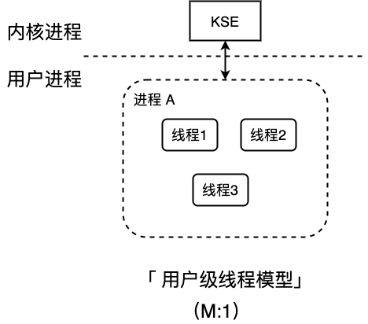
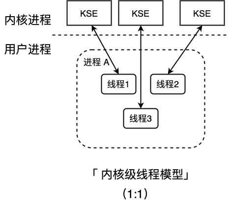
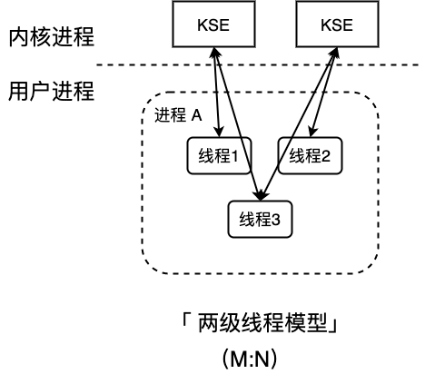

进程
参考：https://www.cnblogs.com/panlq/p/13180589.html
进程是系统进行资源分配和调度的独立单位，程序段、数据段、PCB(进程控制模块)三部分组成了进程 实体(进程映像)，PCB 是进程存在的唯一标准
操作系统为了管理进程设置的一个专门的
数据结构，用它来记录进程的外部特征，描述进程的运动变化进程。系统利用 PCB 来控制和管理进程，所以 PCB 是系统感知进程存在的唯一标志。进程与 PCB 是一一对应的。
detail: http://www.haodaquan.com/159
PCB

进程的状态
- 创建态
操作系统为进程分配资源， 初始化 PCB - 就绪态
运行资源等条件都满足，存储在就绪队列中，等待 CPU 调度 - 运行态
CPU 正在执行进程 - 阻塞态
等待某些条件满足，等待消息回复，等待同步锁，Sleep 等，阻塞队列 - 终止态
回收进程拥有的资源，撤销 PCB
进程之间的转换

进程的切换与过程
进程的调度、切换是有代价的
- 对原来运行进程的各种数据的保存
- 对新的进程各种数据恢复(程序计数器，程序状态字，各种数据寄存器的现场)
进程调度算法的相关参数：
- 对新的进程各种数据恢复(程序计数器，程序状态字，各种数据寄存器的现场)
- CPU 利用率：CPU 工作时间/作业完成的总时间
- 系统吞吐量: 单位时间内完成作业的数量
- 周转时间: 从作业被提交给系统开始，到作业完成为止的时间间隔 = 作业完成时间 - 作业提交时间
- 带权周转时间: (由于周转时间相同的情况下，可能实际作业的运行时间不一样，这样就会给用户带来不一样的感觉)
作业周转时间/作业实际运行时间，带权周转时间 >= 1, 越小越好 - 平均带权周转时间: 各作业带权周转时间之和/作业数
- 等待时间
- 响应时间
调度算法
算法思想？用于解决什么问题
算法规则，用于作业（PCB作业）调度还是进程调度
抢占式的还是非抢占式的？
优缺点？是否会导致饥饿？
当前交互式系统常用调度算法
- 时间片轮转(Round-Robin)
- 算法思想: 公平地、轮流地为各个进程服务，让每个进程在一定时间间隔内可以得到响应
- 算法规则: 按照各进程到达就绪队列的顺序，轮流让各个进程执行一个时间片(例如：100ms),若进程未在一个时间片内执行完，则剥夺处理机，将进程重新放到就绪队列队尾重新排队
- 用于作业/进程调度: 用于进程的调度（只有作业放入内存）
- 是否可抢占？若进程未能在规定时间片内完成，将被强行剥夺处理机使用权，由时钟装置发出时钟终端信号来通知 CPU 时间片到达
- 优缺点: 适用于分时操作系统，由于高频率的进程切换，因此有一定开销；不区分任务的紧急程度
- 是否会导致饥饿：不会
- 优先级调度算法
- 算法思想：随着计算机的发展，特别是实时操作系统的出现，越来越多的应用场景需要根据任务的进程程度决定处理顺序
- 算法规则: 每个作业/进程有各自的优先级，调度时选择优先级最高的作业/进程
- 用于作业/进程调度: 即可用于作业调度（处于外存后备队列中的作业调度进内存），也可用于进程调度(选择就绪队列中的进程，为其分配处理机)，甚至 I/O 调度
- 是否可抢占？具有可抢占版本，也有非抢占式的
- 优缺点: 适用于实时操作系统，用优先级区分紧急程度，可灵活地调整对各种作业/及进程的偏好程度。缺点：会导致饥饿
- 是否会导致饥饿：会
- 多级反馈队列调度算法
维护了多个按照优先级从高到低的进程队列，且每个队列时间片不一致，采用抢占式算法调度。- 算法思想：综合 FCFS、SJF(SPF)、时间片轮转、优先级调度
- 算法规则：
- 设置多级别就绪队列，各级别队列优先级从高到低，时间片从小到大
- 新进程到达时先进入第 1 级队列，按照 FCFS 原则排队等待被分配时间片，若用完时间片进程还未结束，则进程进入下一级队列队尾
- 只有第 k 级别队列为空是，才会为 K+1 级对头的进程分配时间片
- 用于作业/进程调度：用于进程调度
- 是否可抢占？抢占式算法。在 k 级队列的进程运行过程中，若更上级别的队列（1-k-1级）中进入一个新进程，则由于新进程处于优先级高的队列中，因此新进程会抢占处理机，原本运行的进程放回 k 级别队列队尾。
- 优缺点：对各类的进程相对公平(FCFS 的有点)；每个新到达的进程都可以很快就得到响应（RR优点）；短进程只用较少的时间就可以完成（SPF）的优点；不必实现估计进程的运行时间；可灵活地调整对各类进程的偏好程度，比如 CPU 密集型进程、I/O 密集型进程（可以将因 I/O 而阻塞的进程重新放回原队列，这样 I/O 形进程就可以保持较高优先级）
- 是否会导致饥饿感：会
相关知识：https://www.cnblogs.com/whu-2017/p/9477391.html
例题:
进程间的通信方式
参考：https://www.jianshu.com/p/c1015f5ffa74
在计算机系统中，进程之间有时需要进行数据的通信，但是不同进程之间的数据存储是相互隔离的，每一个进程都只能访问自己占有的数据，这时我们就需要使用用于进程间的通信的机制了
不过，出来套接字外，进程间的通信的前提是两进程必须是父子进程关系，没有这种关系的进程间是不能直接进行通信，而是需要利用其共同的父进程进行信息的中转
管道
管道通信在系统中，是以文件的方式进行读写的，匿名管道在物理上由文件系统的高速缓冲区构成，而命名管道则可在系统的临时文件中找到具体的文件，相当于通过外部文件来交流信息。
父子进程间以比特流、字符流的方式传递信息。管道属于半双工通信，在父子进程中同时创建一对管道，然后利用其中一端(0端)来读数据，另一端来写数据。
python 实现匿名管道
1 | # coding:utf-8 |
信号量
- 生产者进程生产产品，消费者进程消费产品
- 当生产者进程生产产品时，如果没有空缓冲区可用，那么生产者进程必须等待消费者进程释放出一个缓冲区
- 当消费者进程消费产品时，如果缓冲区中没有产品，那么消费者进程将被阻塞，直到新的产品被生产出来。
1
2
3
4
5
6
7
8
9
10
11
12
13
14
15
16
17
18
19
20
21
22
23
24
25
26
27
28
29
30
31
32
33
34
35
36
37
38
39
40
41
42
43
44
45
46
47
48
49
50
51
52
53
54
55
56
57
58
59
60
61
62
63
64
65
66
67
68
69
70
71
72
73
74
75
76
77#!/usr/bin/env python
# -*- coding: utf-8 -*-
import multiprocessing
import time
import random
from multiprocessing.sharedctypes import Array
a = Array('i', [i for i in range(2)]) # 共享内存
a[0] = 0
a[1] = 0
semaphore_num = multiprocessing.Semaphore(0) # 产品个数
semaphore_empty = multiprocessing.Semaphore(20) # 缓冲区空位个数n
semaphore_mutex = multiprocessing.Semaphore(1) # 对缓冲区进行操作的互斥信号量
def consumer(flag):
global num
global no
time.sleep(3)
while (True):
time.sleep(1)
print("消费者 " + str(flag) + " 等待中...")
item = random.randint(1, 3)
for i in range(item):
semaphore_num.acquire() # 消费 -1
semaphore_mutex.acquire() # 加锁
no = a[0]
num = a[1]
num -= 1
no += 1
a[0] = no
a[1] = num
print(str(no) + " [消费者 " + str(flag) + "] 消费产品 1. 剩余： " + str(num))
semaphore_mutex.release() # 开锁
semaphore_empty.release() # 释放空位 +1
def producer():
global num
global no
while (True):
time.sleep(1)
print("生产者开始生产...")
item = random.randint(1, 6)
print('生产个数：{}'.format(item))
for i in range(item):
semaphore_empty.acquire() # 占用空位
for i in range(item):
semaphore_mutex.acquire() # 加锁
no = a[0]
num = a[1]
num += 1
no += 1
a[0] = no
a[1] = num
print(str(no) + " [生产者] 生产产品 1. 剩余： " + str(num))
semaphore_mutex.release() # 开锁
semaphore_num.release() # 生产
if __name__ == "__main__":
p1 = multiprocessing.Process(target=producer)
p2 = multiprocessing.Process(target=consumer, args=("0"))
p3 = multiprocessing.Process(target=consumer, args=("1"))
p1.start()
p2.start()
p3.start()
p1.join()
p2.join()
p3.join()
print("程序结束")共享内存
1
2
3
4
5
6
7
8
9
10
11
12
13
14
15
16
17
18
19
20
21
22
23
24
25
26
27
28
29
30
31
32
33
34
35
36
37
38
39
40import multiprocessing
import time
size = 8 * 1024
def pro1(a):
pass
def pro2(a):
for i in range(0, size):
print("[porc2] 写入： ", i)
a[i] = i
time.sleep(1)
def pro3(a):
for i in range(0, size):
msg = a[i]
print('[pro3] pro3 读出：', msg)
time.sleep(0.5)
from multiprocessing.sharedctypes import Array
a = Array('i', [i for i in range(size)])
p1 = multiprocessing.Process(target=pro1, args=(a,))
p2 = multiprocessing.Process(target=pro2, args=(a,))
p3 = multiprocessing.Process(target=pro3, args=(a,))
p1.start()
p2.start()
p3.start()
p1.join()
p2.join()
p3.join()socket 套接字
套接字是网络进程通信的机制，一般是用于位于不同机器上的进程间的通信。很多网络程序如即时通讯软件、游戏、浏览器
数据库等，都往往使用的这种机制。
参考：https://blog.ailemon.net/2018/01/21/python-implement-about-socket-connection/1
2
3
4
5
6
7
8
9
10
11
12
13
14
15
16
17
18
19
20
21
22
23
24
25
26
27
28
29
30
31
32
33
34
35
36
37
38
39
40
41
42
43
44
45
46
47
48
49
50
51
52
53
54
55
56
57
58
59
60
61
62
63
64
65
66
67
68
69
70
71
72
73
74
75
76
77
78
79
80
81
82
83
84
85import multiprocessing
import socket
class ClientProcess(multiprocessing.Process):
def __init__(self,conn,addr):
multiprocessing.Process.__init__(self)
self.conn = conn
self.addr = addr
def run(self):
self.conn.sendall(bytes("你好，我是AI柠檬~",encoding="utf-8"))
ret_timeout = str(self.conn.recv(1024),encoding="utf-8")
self.conn.settimeout(int(ret_timeout))
while(True):
try:
ret = str(self.conn.recv(1024),encoding="utf-8")
self.conn.sendall(bytes("我收到了你的信息："+ret,encoding="utf-8"))
if(ret==":q"):
self.conn.close()
break
except Exception as ex:
self.conn.close()
break
if __name__ == '__main__':
s = socket.socket()
inp_addr = input("Please input this server's ip address:\n>>>")
inp_port = input("Please input this server's port:\n>>>")
s.bind((inp_addr,int(inp_port)))
s.listen()
print("服务器已开启")
users = []
while(True):
conn,addr=s.accept()
p = ClientProcess(conn,addr)
p.start()
users.append(p)
print("有一个新用户连接，进程号pid:", p.pid)
num = 0
tmp_users=[]
for i in range(len(users)):
if(users[i].is_alive()==True):
tmp_users.append(users[i])
users = tmp_users
print("当前用户数：", len(users))
s.close()
import socket
obj = socket.socket()
inp_addr = input("Please input server's ip address:\n>>>")
inp_port = input("Please input server's port:\n>>>")
obj.connect((inp_addr,int(inp_port)))
inp_timeout = input("Please input timeout(s):\n>>>")
obj.sendall(bytes(inp_timeout,encoding="utf-8"))
obj.settimeout(int(inp_timeout))
msg = str(obj.recv(1024),encoding="utf-8")
print(msg)
while True:
inp = input("Please(:q\退出):\n>>>")
if(inp!=""):
obj.sendall(bytes(inp,encoding="utf-8"))
if(inp == ":q"):
obj.close()
break
try:
ret = str(obj.recv(1024),encoding="utf-8")
print(ret)
except socket.timeout:
print("[Error]Network Connection Time Out!")
break
except:
print("[Error]Unknown Network Connection Error!")
break
线程
线程是 CPU 进行调度的基本单位
类比：
去图书馆看书。
切换进程运行环境：有一个不认识的人要用桌子，你需要把你的书收走，他把自己的书放到桌子上
同一进程内的线程切换=你的舍友要用这张书桌，可以不把桌子上的书收走
线程的属性
- 线程是处理机调度的单位
- 多 CPU 计算机中，各个线程可占用不同的 CPU
- 每个线程都有一个线程 ID、线程控制块（TCB）
- 线程也有就绪、阻塞、运行三种基本状态
- 线程几乎不拥有系统资源
- 同一进程的不同线程间共享进程的资源
- 由于共享内存地址空间，同一进程中的线程间通信甚至无需系统干预
- 同一进程中的线程切换，不会引起进程切换
- 不同进程中的线程切换，会引起进程切换
- 切换同进程内的线程，系统开销很小
- 切换进程，开销很大
线程的实现方式
- 用户级线程(User-Level Thread), 用户级线程是由应用程序通过线程库实现，如 python(thread), 线程的管理由应用程序负责
- 内核级线程(kernel-Level Thread), 内核级线程的管理工作由操作系统内核完成，线程调度，切换等工作都由内核负责，因此内核级线程的切换必然需要在核心态下才能完成
进程和线程关系：一条线程指的是进程中一个单一顺序的控制流，一个进程中可以并发多个线程，每条线程并行执行不同的任务。CPU 的最小调度单元是线程。
线程的基本状态
- 新建（New）: 线程在进程内派生出来，它即可由进程派生，也可由线程派生
- 阻塞（blocked）: 线程运行过程中，可能由于各种进入阻塞状态
- 通过 sleep 方法进入睡眠状态
- 线程调用一个在 I/O 阻塞的操作，即该操作在输入输出操作完成之前不会返回它的调用者
- 试图得到一个锁，而该锁被其他线程持有
- 等待某个触发条件
- 就绪（ready）：一个新创建的线程并不自动开始运行，要执行线程，必须调用线程的 start()方法。
当线程对象调用 start()方法返回后，线程就处于就绪状态。处于就绪状态的线程并不一定运行 run()方法，线程还必须同其他线程竞争 CPU 时间，只有获得 CPU 时间才可以运行线程 - 运行(running): 线程后的 CPU 时间后，进入运行状态真正开始执行 run() 方法
- 死亡(dead): 线程退出自然死亡，或者异常终止导致线程猝死

线程模型
用户级线程模型（一对多模型）

多个用户态的线程对应着一个内核线程，程序的创建、终止、切换或者同步等线程工作必须自身来完成。python 就是这种。虽然可以实现异步，但是不能有效利用多核（GIL）
内核级别线程模型（一对一）

这种模型直接调用操作系统的内核线程，所有线程的创建、终止、切换、同步等操作，都由内核来完成。C++ 就是这种
两级线程模型(M:N)

这种线程模型会先创建多个内核级线程，然后用自身的用户级线程去对应创建的多个内核级线程，自身的用户级线程需要本身程度去调度，内核级的线程交给操作系统内核去调度。
GO 语言就是这种
线程总结
python 中的多线程因为 GIL 的存在，并不能利用多核CPU优势，但是在阻塞的系统调用中，如 sock.connect(),
sock.recv() 等耗时的 I/O 操作，当前的线程会释放 GIL,让出处理器。但是单个线程内，阻塞调用上还是阻塞的。除了 GIL 之外，所有的多线程还有通病，它们的调度策略是抢占式的，以保证同等优先级的线程都有机执行，带来的问题就是：
并不知道下一刻执行那个线程，也不知道正在执行什么代码，会存在竞态条件
协程
协程通过在线程中实现调度，避免了陷入内核级别的上下文切换造成的性能损失，进而突破了线程在 IO 上的性能瓶颈。
python 协程
eventloop 协程模型
python 的协程源于 yield 指令
- yield item 用于产出一个值，反馈给 next() 的调用方法
- 让出处理机，暂停执行生成器，让调用方继续工作，直到需要使用另一个值时再调用 next()
协程式对线程的调度，yield 类似惰性求职方式可以视为一种流程控制工具，实现协作式多任务，python3.5引入了 async/await 表达式，使得协程证实在语言层面得到支持和优化，大大简化之前的 yield 写法。
python 中的协程的调度是非抢占式的，也就是说一个协程必须主动让出执行机会，其他协程才有机会运行。让出执行的关键字 await,如果一个协程阻塞了，持续不让出 CPU 处理机，那么整个线程就卡住了，没有任何并发。
go 协程
go - GMP模型
go 语言使用 go 关键字，goroutine 之间使用 channel 通信
go 实现了两种并发形式：
- 多线程共享内存：如 Java 或者 C++ 在多线程中共享数据的时候，通过锁来访问
- Go 语言特有的，也是 Go 语言推荐的 CSP （communicating sequential processes）并发模型
协程本质上来说是一种用户态的线程，不需要系统来执行抢占式调度，而是在语言层面实现线程的调度。
go 协程是轻量级的，栈初始为 2KB(os 操作系统的线程一般都是固有的栈内存 2M)，调度不涉及系统调用，用户函数调用前会检查栈空间是否充足，不够的话，会进行栈扩容，栈大小限制可以达到 1GB。
Go 语言相比起其他语言的优势在于 OS 线程是由 OS 内核来调度的，goroutine 则是由 Go 运行时（runtime）自己的调度器调度的，这个调度器使用一个称为 m:n 调度的技术。
其一大特点是 goroutine 的调度是在用户态下完成的，不涉及内核态与用户态之间的频繁切换，包括内存的分配与释放，都是在用户态维护着一块大的内存池，不直接调用系统的 malloc 函数，成本比调度 OS 线程低很多。
另外一方面充分利用了多核的硬件资源，近似的把若干 goroutine 均分在物理线程上。